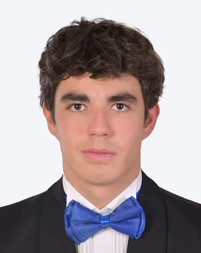

Confinamiento de partículas en campos electromagnéticos
Simulación y control de una partícula cargada atrapada por campos magnéticos:
de la fuerza de Lorentz a un reactor tipo tokamak, integrando física, métodos
numéricos y control activo.
Curso: Modelación de Sistemas Electromagnéticos · Reto integrador
Video · Partícula confinada (YouTube)
02 — Perfiles profesionales
¿Quiénes confinan la partícula?

Diego Esteban Gallo Mora
ITC
Diego es estudiante de ITC en el Tec de Monterrey, con interés en desarrollo de software y programación competitiva. A lo largo de su formación ha desarrollado habilidades en modelado algorítmico y visualización de sistemas dinámicos complejos.
En este reto integró su background computacional con física electromagnética para simular el confinamiento de partículas usando las leyes de Coulomb, Larmor y Biot-Savart.
Arantza es estudiante de IRS en el Tec de Monterrey, con interés en investigación y desarrollo en el área de física aplicada. Su experiencia en programación y modelado matemático le permite abordar problemas complejos con enfoques innovadores. En este reto, contribuyó con su conocimiento en electromagnetismo y simulación numérica.
Santiago es estudiante de ITC en el Tec de Monterrey, con interés en ingeniería de software y desarrollo de aplicaciones. Su experiencia en programación y análisis numérico le permite abordar problemas técnicos con enfoques innovadores. En este reto, aportó su conocimiento en simulación computacional y optimización.
Irian es estudiante de IRS en el Tec de Monterrey, con interés en investigación y desarrollo en el área de física aplicada. Su experiencia en programación y modelado matemático le permite abordar problemas complejos con enfoques innovadores. En este reto, contribuyó con su conocimiento en electromagnetismo y simulación numérica.
El reto se abordó con un enfoque de ingeniería incremental: cada avance
validó una pieza de física antes de añadir complejidad, de modo que el
código final acopla tres fases de confinamiento sobre una misma base
numérica confiable.
1
Modelado físico
Fuerza de Lorentz y movimiento de la partícula
Partimos de la ecuación F = q(v × B). Implementamos y comparamos
integradores (Euler-Cromer y Boris) para una partícula cargada en un campo
magnético uniforme, verificando que el radio de giro y la energía se
comportaran físicamente.
2
Campos realistas
Campo de solenoide / espiras (Biot-Savart)
Sustituimos el campo idealizado por el de bobinas reales calculado con
Biot-Savart, y estudiamos cómo la geometría del solenoide moldea la
trayectoria y atrapa a la partícula a lo largo del eje.
3
Control + refinamiento numérico
Confinamiento con control activo y tokamak 3D
Construimos un anillo de cables con corrientes alternadas y un
control sectorizado: cuando la partícula cruza un radio
límite, tres cables suben su corriente de rescate para empujarla de vuelta.
Refactorizamos la física en funciones, añadimos Euler / RK2 / RK4 y un
análisis de energía. Finalmente extendimos todo a un reactor tipo
tokamak en 3D con campo toroidal + poloidal y control de bobinas.
4
Validación
Verificación, métricas y visualización
Comprobamos conservación de energía (el campo magnético no realiza
trabajo: cualquier deriva es error numérico), medimos el porcentaje
de tiempo que el sistema necesitó la corriente de rescate y generamos
gráficas y animaciones GIF donde se aprecia el parpadeo de los cables al
activarse el control.
Acople de las tres fases de confinamiento
Las tres fases comparten el mismo motor numérico (integrador RK4 sobre el
vector de estado) y la misma función de aceleración; lo que cambia es la
fuente del campo:
FASE I
Campo uniforme
Lorentz puro: giro ciclotrónico y validación de integradores.
FASE II
Solenoide / espiras
Campo de bobinas reales (Biot-Savart) confinando a lo largo del eje.
FASE III
Control activo + tokamak
Corriente de rescate sectorizada y campo toroidal-poloidal en 3D.
04 — Metacognición individual
Lo que aprendimos
Orden alfabético por primer apellido.
Santiago Arias Paul
Reflexión personal
Durante este bloque fortalecí mis habilidades en optimización de código MATLAB,
particularmente identificando patrones de ineficiencia como crecimiento de vectores
en loops, cálculos redundantes y vectorización de operaciones, además de comprender
a fondo la diferencia entre métodos de integración (Euler, RK2 y RK4) y su impacto
en la conservación de energía. Lo que más me impactó fue ver cómo pequeñas decisiones
de implementación, como el orden de actualización en Euler-Cromer o el tamaño del
paso de tiempo, pueden determinar si una simulación refleja la física real o produce
escapes artificiales. Mi parte favorita del reto fue conectar los conceptos físicos
del confinamiento (Fuerza de Lorentz, Radio de Larmor, Teorema de Earnshaw) con su
implementación computacional, entendiendo que el confinamiento de plasma no es solo
un problema de física sino un problema de ingeniería de control que exige rigor
tanto matemático como algorítmico.
Irian Nallelys García Barquero
Reflexión personal
[Párrafo reflexivo individual.]
Diego Esteban Gallo Mora
Reflexión personal
Durante este bloque desarrollé habilidades concretas en simulación
numérica, en particular la implementación de integradores Runge-Kutta 4
para resolver ecuaciones de movimiento bajo la fuerza de Lorentz.
Lo que más me impactó fue entender el Teorema de Earnshaw de forma
práctica: ver en la simulación por qué el confinamiento eléctrico puro
siempre falla y cómo el campo magnético corrige esa inestabilidad de
manera dinámica, no estática.
Mi parte favorita del reto fue construir el sistema de confinamiento
híbrido y visualizar cómo el control sectorizado activo rescata la
partícula en tiempo real, conectando directamente la teoría de la ley de
Biot-Savart con un resultado visual tangible.